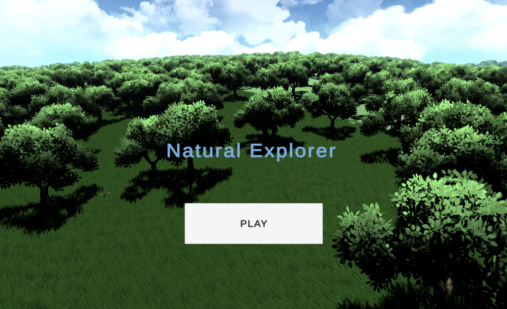

Natural Explorer
Personal open-world nature exploration project in Unity.

What is this project?
Natural Explorer is my own personal project — an open-world space built around natural environments, focused on exploration, scale, and readable outdoor layout in Unity.
What I contributed
- Solo project — all commits under my account.
- Open-world terrain layout and boundary tuning for exploration flow.
- Main menu scene and scene loading into the game world.